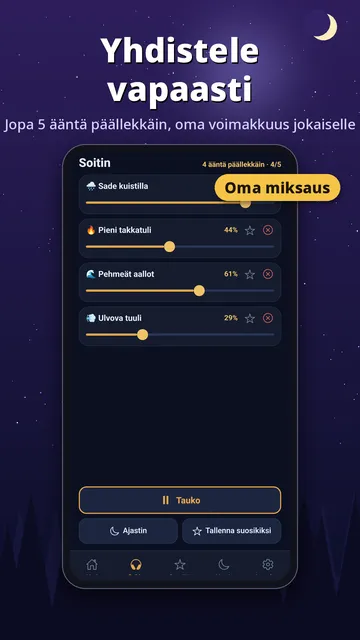

Näin nukut meluisassa kerrostalossa
Kerrostaloa ei saa hiljaiseksi, mutta yön ääniä voi tehdä helpommin siedettäviksi. Eniten apua on yleensä huoneen järjestelyistä, korvatulpista jos ne sopivat sinulle, asiallisesta puheesta naapurille kun se on paikallaan, ja tasaisesta taustaäänestä, jotta äkilliset äänet eivät nouse niin terävästi esiin.
Tämä on käytännön opas, ei lääkinnällinen ohje. Se ei hoida unihäiriöitä, eikä se lupaa, että nukut kaiken läpi. Osa öistä on silti levottomia. Tarkoitus on koota muutama tavallinen keino, jotka usein ottavat pahinta terää pois.


Miksi kerrostalon äänet häiritsevät etenkin yöllä
Kerrostalon äänet tuntuvat yöllä pahemmilta, koska talo on muuten hiljaisempi ja jokainen ääni erottuu, ja koska yrität nukkua etkä vain olla huomaamatta niitä. Tyypillisiä häiriöitä ovat puhe seinän takaa, televisio, askeleet, porraskäytävän ovi, liikenne ja kuorsaava puoliso.
Jokaisen äänen täydellistä tunnistamista ei tarvita. Auttaa kuitenkin huomata, onko ääni tasaisen keskitasoinen (puhe, televisio, tie), äkillinen ja terävä (ovet, korot, pudonnut pannu) vai syvä basso, jonka tuntee yhtä paljon kuin kuulee. Kahteen ensimmäiseen tehoavat usein korvatulpat, pehmeät materiaalit ja taustaääni. Basso ja rakenteissa tuntuva jyske eivät yleensä taitu samoin, ja silloin naapurille tai isännöitsijälle puhuminen merkitsee enemmän kuin mikään sovellus tai tulppapari.
Jos pääasiallinen häiriö on seinän takana asuva ihminen, lyhyempi sivu on myös aiheesta naapurin melu yöllä ja luonnon äänet. Tässä oppaassa käydään läpi koko asunto: huone, korvatulpat, keskustelu, luonnon äänet ja yksinkertainen rutiini.
Muuta huonetta ennen kuin ostat mitään
Pienet muutokset huoneessa auttavat usein yhtä paljon kuin uusi laite, ja ne voi kokeilla samana iltana. Siirrä sänkyä hieman irti meluisimmasta yhteisestä seinästä tai ikkunasta, joka avautuu tielle, laita matto paljaalle lattialle, ja tuki oven alareuna jos ääni tulee porraskäytävästä.
Kirjahylly tai vaatekaappi yhteistä seinää vasten ei ole äänieristys, mutta se voi hieman pehmentää puhetta. Raskaat verhot auttavat enemmän kadun ääniin kuin kipsilevyn läpi kuuluvaan naapuriin, koska ne toimivat ikkunassa, ei seinässä. Jos käytössä on kaksi huonetta, nuku hiljaisemmassa, vaikka se ei olisikaan virallinen makuuhuone. Taiteltu pyyhe tai kynnystiiviste oven alaosassa riittää usein pehmentämään käytävän askeleita ja puhetta.
Mikään näistä ei pysäytä bassokaiutinta. Ne voivat kuitenkin tehdä tavallisesta kerrostaloelämästä hieman pehmeämpää, ja se on realistinen tavoite. Jos häiriö tulee yläkerrasta, paksu matto ei auta sinun katossasi, mutta se voi olla asia, josta voi puhua naapurille ystävällisesti: matto heidän lattiallaan auttaa usein enemmän kuin mikään sinun huoneessasi. Sama pätee toisinpäin: jos oma lattiasi on paljas, matto voi vähentää sitä, mitä itse tuotat alaspäin.
Korvatulpat, ja milloin niistä on apua
Korvatulpat ovat usein tehokkain keino puheeseen, televisioon ja kuorsaavaan puolisoon, koska ne istuvat korvassa eivätkä riipu kaiuttimesta. Vaahtomuovitulpat ovat edullisia ja toimivat, kun ne rullataan ohueksi ja annetaan laajeta korvassa; vaha- tai silikonitulpat sopivat monelle, joka ei pidä vaahtomuovin tiiviistä tunteesta.
Mukavuus merkitsee enemmän kuin korkein ilmoitettu vaimennusluku, koska tulppa jota et kestä kello kahdelta päätyy yöpöydälle. Anna itsellesi muutama yö totutella. Jos tulpat sattuvat, kokeile toista mallia tai loivempaa asetusta, äläkä tunge niitä väkisin. Tämä opas ei voi kertoa, mikä sopii juuri sinun korvillesi; jos tunnet kipua, painetta tai huolta, lopeta ja kysy ammattilaiselta.
Korvatulppia voi käyttää yksin tai yhdessä hiljaisen taustaäänen kanssa. Äänen tarvitsee silloin peittää vain se, mikä tulppien läpi vielä kuuluu, joten kaiutinta ei tarvitse vääntää kovalle.
Naapurille puhuminen
Lyhyt, asiallinen keskustelu päivällä on yleensä parempi kuin lappu oven raossa keskiyöllä, ja selvästi parempi kuin seinään paukuttaminen. Kerro mitä kuulet, milloin kuulet, ja mikä auttaisi – esimerkiksi kengät pois kymmenen jälkeen tai bassokaiutin hieman hiljemmalle – ja anna toiselle mahdollisuus kertoa oma puolensa. Moni naapuri ei huomaa, miten puulattia tai yhteinen seinä kuljettaa ääntä.
Jos taloyhtiöllä on järjestyssäännöt tai hiljaisuusajat, niistä voi mainita ilman että keskustelusta tehdään juridinen väittely. Monessa taloyhtiössä hiljaisuus on sovittu illasta aamuun, usein kymmenestä seitsemään, mutta tarkista oman talon säännöt. Pidä yksinkertaista kirjaa päivistä ja kellonajoista, jos häiriö jatkuu, koska isännöitsijä tai taloyhtiön hallitus saa siitä enemmän irti kuin yleisestä valituksesta. Asia kannattaa viedä eteenpäin vasta, kun kohtuuttoman toistuva meteli jatkuu asiallisen keskustelun jälkeen – ei yhden juhlan takia.
Jos olet jo vihainen kun meteli on päällä, odota seuraavaan päivään jos se on turvallista. Porraskäytävän vastakkainasettelu kello yhdeltä parantaa harvoin seuraavaa viikkoa. Tämä ei korvaa virallisia ohjeita tai oman taloyhtiön käytäntöjä. Se on vain käytännöllinen järjestys: kysy ensin ystävällisesti, sitten käytä taloyhtiön omia kanavia.
Jos asut vuokralla, vuokranantaja voi olla oikea yhteystaho isännöitsijän rinnalla, varsinkin jos järjestyssääntöjä rikotaan toistuvasti. Älä lupaa toiselle enempää kuin tiedät, äläkä tee valituksesta henkilökohtaista. Asiallinen, ajankohtiin sidottu kuvaus auttaa kaikkia osapuolia enemmän kuin yleinen ärtymys.
Melun peittäminen luonnon äänillä
Melun peittäminen tarkoittaa tasaisen taustan lisäämistä, jotta äkillinen puhe, ovi tai kuorsaus on pienempi muutos hiljaiseen huoneeseen. Se ei ole vastamelua, eikä se poista bassoa. Jatkuva luonnon ääni – reilu sade, puro tai meren aallot – on se, mitä moni käyttää, koska siinä on vähemmän aukkoja kuin takassa, jonka rätinöiden välissä on pitkä hiljaisuus.
Aseta ääni lähellesi: pieni kaiutin sängyn omalle puolelle, tai kuulokkeet jos se sopii teille molemmille. Pidä voimakkuus vain hieman häiriötä korkeampana. Täysille vääntäminen väsyttää, eikä se silti korjaa bassokaiutinta. Moni vertaa tätä valkoiseen kohinaan; luonnon äänet eivät ole sama asia, mutta ne voivat peittää arjen ääniä pehmeämmin.
Sade on tavallisin lähtökohta, varsinkin sade joka asuu puhelimessa eikä riipu yövideosta. Opas sadeääniin nukkumiseen ilman nettiä on erillinen, samoin sivu jos haluat nimenomaan sateen äänen katolla. Takkatulen rätinä nukkumiseen voi olla miellyttävä yössä, joka on jo ennestään melko hiljainen, mutta se peittää yleensä vähemmän kuin tasainen sade. Jos häiriö on puoliso eikä naapuri, katso äänet kuorsauksen peittämiseen.
Yksinkertainen iltarutiini levottomaan taloon
Lyhyt, toistuva rutiini ei hiljennä taloa, mutta se estää yön alkamasta jo valmiiksi kireänä. Valitse suunnilleen sama nukkumaanmenoikkuna, himmennä valot, laita korvatulpat jos käytät niitä, käynnistä tuttu ääni maltillisella voimakkuudella ja käännä puhelin näytön puoli alaspäin.
Jos heräät yöllä, vältä viestien tarkistamista. Säädä ääntä hieman jos tarvitset, tai aseta uniajastin uudelleen, ja anna itsellesi muutama minuutti ilman että käsittelet jokaista porraskäytävän ovea uutena hätätilanteena. Osa öistä on silti huonoja. Rutiini on siksi, ettei yksi huono tunti veny viikon mittaiseksi kello kolmen kokeiluksi.
Sama sadesekoitus, samat tulpat ja sama sängyn puoli antavat yölle muodon, vaikka talo ei yhteistyöhön suostuisi. Jos jokin ääni alkaa tuntua tapahtumalta eikä taustalta – esimerkiksi terävä ukkosen räsähdys – vaihda seuraavana iltana tasaisempaan.
Mikä auttaa tavallisiin ääniin
Käytä tätä lähtökohtana, ei takuuna. Kokeile kahta tai kolmea sarakkeen ”usein auttaa” keinoa ennen kuin päätät, ettei mikään toimi. Sarake ”ei yleensä auta” on siksi, ettet vääntäisi kaiutinta kovalle koko yöksi tai odottaisi sovellukselta isännöitsijän työtä.
| Äänen tyyppi | Mikä usein auttaa | Mikä ei yleensä auta |
|---|---|---|
| Puhe, televisio, tavalliset askeleet | Korvatulpat, matto tai oven tiivistys, tasainen sade tai puro lähellä sänkyä | Puhelin kaiuttimella huoneen toisessa päässä hiljaisella voimakkuudella |
| Kuorsaus samassa huoneessa | Korvatulpat, ääni lähellä omaa korvaa, keskustelu päivällä | Kaiuttimen vääntäminen kovalle, tai odotus että sovellus lopettaa kuorsauksen |
| Liikenne, porraskäytävän ovet, satunnainen kolina | Raskaat verhot tai oven tiivistys, korvatulpat, jatkuva luonnon ääni | Jokaisen yksittäisen äänen kokeminen kriisinä |
| Basso, bassokaiutin, rakenteissa tuntuva jyske | Asiallinen keskustelu päivällä, isännöitsijä tai taloyhtiön hallitus, sängyn siirto pois yhteisestä seinästä | Pelkkä äänien peittäminen tai korvatulpat |
Missä ilman nettiä toimiva luontoäänisovellus sopii kuvaan
Luontoäänisovellus on yksi keino yllä olevien rinnalle, ei kokonainen ratkaisu. Siitä on eniten hyötyä, kun haluat tasaisen taustan, joka jatkaa soimistaan lukitulla näytöllä, ilman mainoksia ja ilman että tarvitset yhteyttä kello kahdelta.
Uniäänet – Levollinen yö on pieni Android-sovellus, jossa on 23 luonnon ääntä – sade, takkatuli, puro, meri, tuuli ja ukkonen – joita voi kuunnella yksin tai sekoittaa, enintään viisi kerrallaan. Nauhoitteet ovat valmiina sovelluksessa, joten ne toimivat ilman nettiä, jatkuvat näytön lukittuessa ja voivat himmentyä pois enintään 12 tunnin ajastimella. Mainoksia ja käyttäjätiliä ei ole.
Sovellus tehtiin alun perin omaan käyttöön, koska tekijä on herkkä äänille yöllä. Se ei ole lääkinnällinen sovellus eikä se hoida unihäiriöitä. 7 päivän kokeilu alkaa ensimmäisestä käynnistyksestä; kaikki ominaisuudet ovat käytössä, eikä maksutietoja kysytä. Kokeilu ei muutu itsestään maksulliseksi tilaukseksi. Sen jälkeen voit jatkaa kuukausitilauksella Google Playssa, hintaan joka näkyy ennen tilaamista. Tehty Suomessa.
7 päivää ilmaiseksi, sen jälkeen kuukausitilaus. Uniäänet – Levollinen yö, Androidille.
Usein kysyttyä
Peittävätkö luonnon äänet naapurin basson tai bassokaiuttimen?
Eivät. Peittäminen toimii parhaiten keskitason ääniin, kuten puheeseen, televisioon tai liikenteeseen. Syvä basso kulkee talon rakenteissa, eivätkä korvatulpat ja kaiuttimet yleensä riitä siihen. Se on keskustelu naapurin, tai isännöitsijän, kanssa – ei sovellusasia.
Voiko korvatulppia ja sadeääntä käyttää yhtä aikaa?
Voi. Moni tekee niin. Pidä toiston voimakkuus matalana, koska tulpat vaimentavat jo valmiiksi, ja käytä tasaista ääntä kuten sadetta eikä jotain, jossa on äkillisiä räsähdyksiä.
Kannattaako ääni soittaa puhelimesta vai kaiuttimesta?
Lähde lähellä korvaa toimii yleensä paremmin kuin puhelin huoneen toisessa päässä, koska peittävä ääni on lähempänä kuin häiriö, jota yrität peittää. Pieni kaiutin yöpöydällä riittää useimmille.
Pitääkö mennä naapuriin oven taakse kesken metelin?
Jos on myöhä ja olet jo vihainen, on yleensä fiksua odottaa seuraavaan päivään. Lyhyt päiväkeskustelu on kaikille helpompi kuulla selvästi, eikä se yhtä helposti käänny riidaksi porraskäytävässä.
Entä jos häiriö on kuorsaava puoliso, ei vain naapuri?
Käytä samoja keinoja – korvatulppia, ääntä oman sängyn puolella ja keskustelua päivällä – ja lue lyhyempi opas äänistä kuorsauksen peittämiseen. Sovellus ei lopeta toisen kuorsausta, eikä se ole syy lykätä ammattilaisen arviota, jos kuorsaus itsessään huolestuttaa.